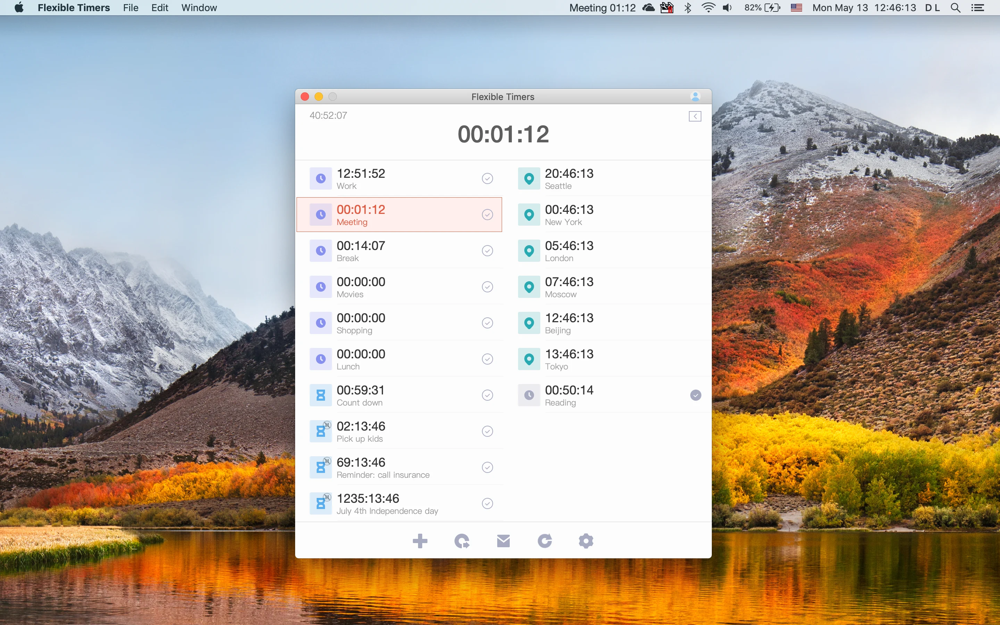
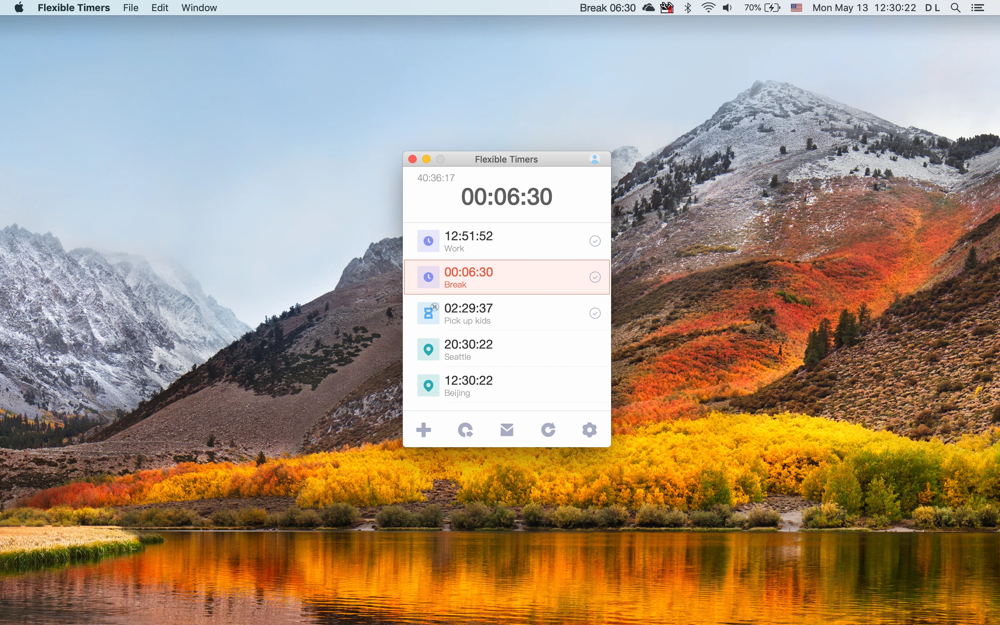
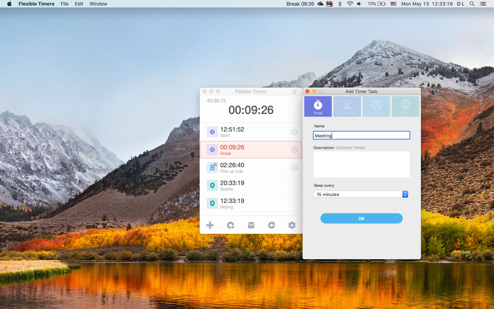
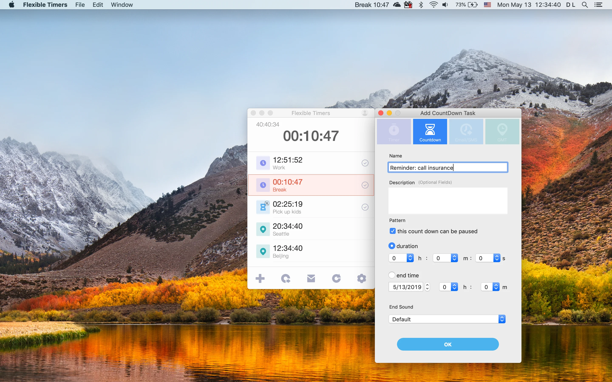

Flexible Timers
Flexible Timers is a macOS app for timers, countdowns, clocks, and reminder workflows.




Flexible Timers is a macOS app for timers, countdowns, clocks, and reminder workflows.



